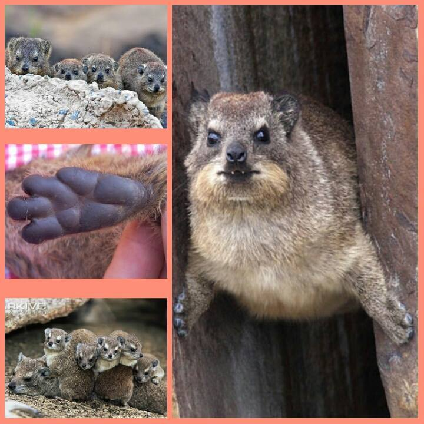

Meet the Quokka: The Perpetual Optimist

Quokkas are like the eternal optimists of the animal kingdom. Native to Australia, these little marsupials are famous for their almost magical ability to look like they’re smiling 24/7. They thrive on Rottnest Island, where they’ve become the unofficial "selfie royalty," posing for pictures with curious tourists.
Don’t be fooled by their smiles, though. Quokkas are tough little survivors who can go for long periods without drinking water. They get most of their hydration from the plants they eat, making them well-adapted to dry environments.
Want to learn more about Quokkas? Check out this link!
Meet the Hyrax: The Master of the Mountains
Hyraxes might look like fluffy little couch potatoes, but these guys are mountaineering pros. Found chilling in rocky outcrops across Africa and the Middle East, hyraxes spend their days basking in the sun and dodging predators like eagles.
Hyraxes have unique feet with rubbery soles that help them climb steep rocks with ease. These agile creatures can scale cliffs and balance on ledges, making them some of the most underrated rock climbers in the animal world.
Interested in Hyraxes? Check out this link!
Quokka vs. Hyrax: The Fluffy Face-Off
It’s time for the ultimate showdown between two adorable yet wildly different creatures. Quokkas may have won the Internet with their selfies, but Hyraxes are the unsung heroes of the animal kingdom. Both are small, fluffy, and cute, but that’s where the similarities end.
Who would win in a battle of personality? Quokkas bring charm and photo ops, while Hyraxes dominate the wilderness with their climbing skills. The real question is: can a selfie beat sheer rock-climbing prowess?
- Smile Factor: Quokkas have a permanent grin. Hyraxes, not so much.
- Surprise Relative: Hyraxes are related to elephants, while quokkas stick to their marsupial fam.
- Instagrammable: Quokkas rule the selfie world. Hyraxes prefer life off the grid.
- Vacation Vibes: Hyraxes love lounging on rocks. Quokkas are all about hopping around.

Who do you think won?